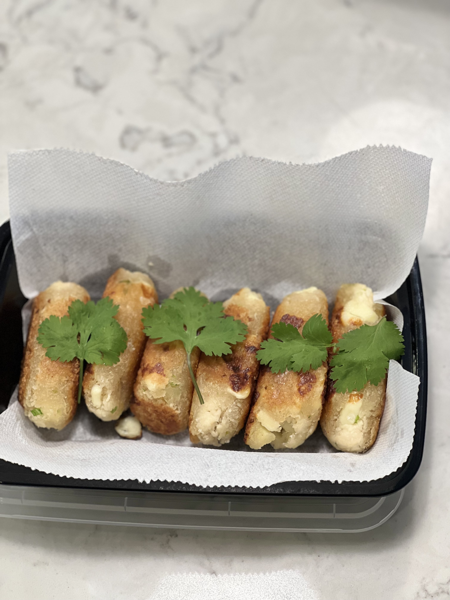

Ecuadorian Food

Ecuadorian Casavs Muchines
Muchines are a staple in the Ecuadorian house especially for breakfast with
a really great cup of coffee. Muchines are a very humble dish it only takes
four ingredients but if its made with love you have a dish that just makes
you smile and feel warm all over.
Muchines are made from Yuca and is traditionaly found in the Coastal region of
Ecuador. Muchines is popular for the energy it brings when eaten, this is why
it's mostly a food consumed at breakfast. You can call this the Ecuador bread.
Ingededients
- 2 pounds of Yuca
- 2 Scallions
- 10 ounces of Frying cheese
- Oil (for frying)
- Salt (to taste)
Steps on making Muchines
- Grade the 2 pounds of Yuca into a large bowl, you are going to want to make sure that
the Yuca is findly graded.
- Dice the Scallions into small pieces, larger if you like a stronger onion taste.
Place the diced scallions into the bowl with the Yuca you graded earlier.
- Next cut the frying cheese into small cubes. These cubes should be small enough to fill the
muchines but large enough to be seen and tasted within the muchines. Place the
chopped cheese into the same bowl.
- After all three ingredients are in the bowl you mix them lightly with both hands
then while doing so add the salt to taste. Don't over salt the mixture it will be
very salty after frying them.
- When the mixture has been fully mixed and the salt level is to your liking
you can start to make the Muchines. Take some of the mixture in your hand,
just enough to make a small football like ball using both hands. This technic
is almost like making a meatball but instead of moving your hands in a circular
motion, your hands should move in a almost side to side movement.
- Pour the oil for frying into a shallow frying pan. Use just enough oil to
cover the bottom of the muchines and heat the oil up.
Once the oil is ready fry the muchines turning them every 2-3 minutes on medium
heat. You are trying to achieve a Golden Brown and Delicious (GBD), once you achieve
this rich color remove the muchines and place them on a plate with a paper towl
to absord any oil left.
- Finally serve nice and hot with a perfect black coffee or which ever way you
take your coffee.
Sit back and enjoy!